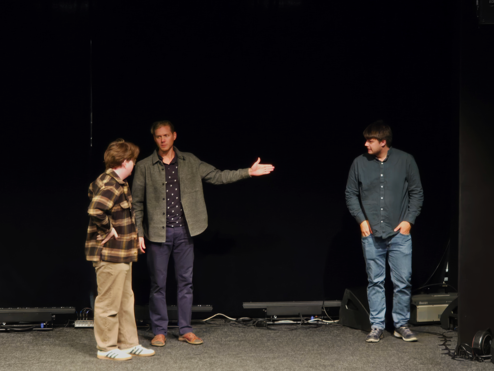
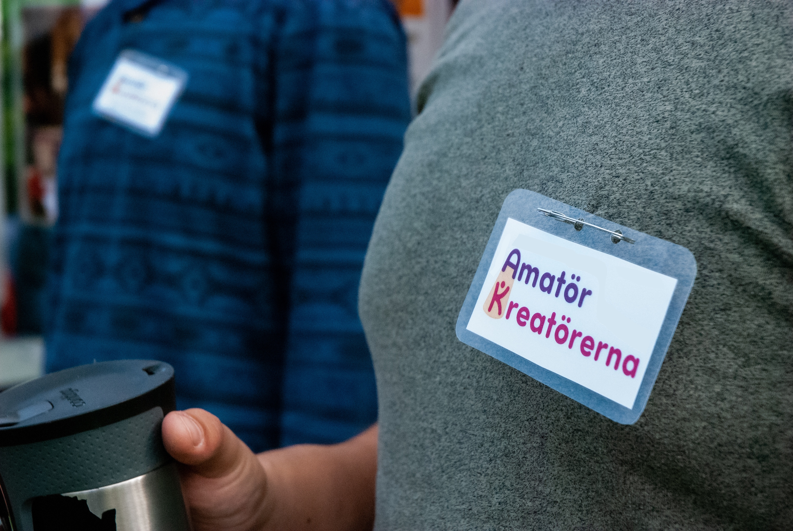

Våra engagemang just nu
Vi hos AmatörKreatörerna jobbar ständigt med våra medlemmar för att hitta och utforska vad som driver eran kreativitet. Här är en lista på de projekten vi håller på med just nu:
- Radioteater
- Julshow

Vi bjuder in er till att utforska ert intresse för att stå på scen, musicera, skriva manus, röstskådespela och mycket mera! Vår förening sammanför den passion och kreativitet som den vardagliga versionen av oss drömmer om att utforska. Var en del av vår produktion här hos AmatörKreatörerna.

Vi hos AmatörKreatörerna jobbar ständigt med våra medlemmar för att hitta och utforska vad som driver eran kreativitet. Här är en lista på de projekten vi håller på med just nu:

Frågor? Kan vara allt från vad du får som medlem till om just det du vill göra passar in hos oss, tveka inte att skriva!
Vår e-mejl: amatorkreatorerna@gmail.com